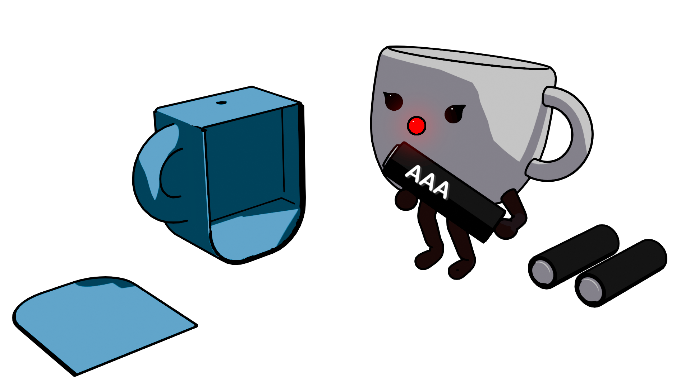
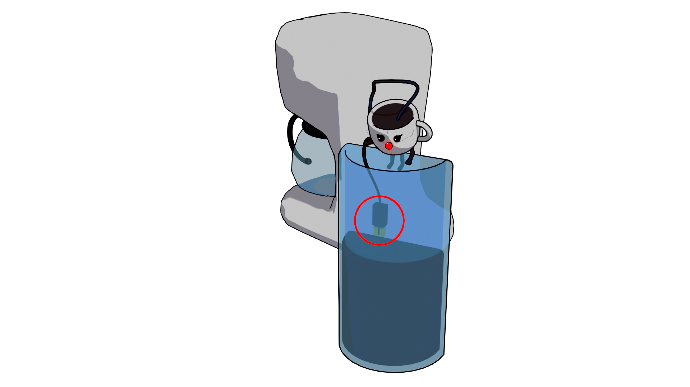
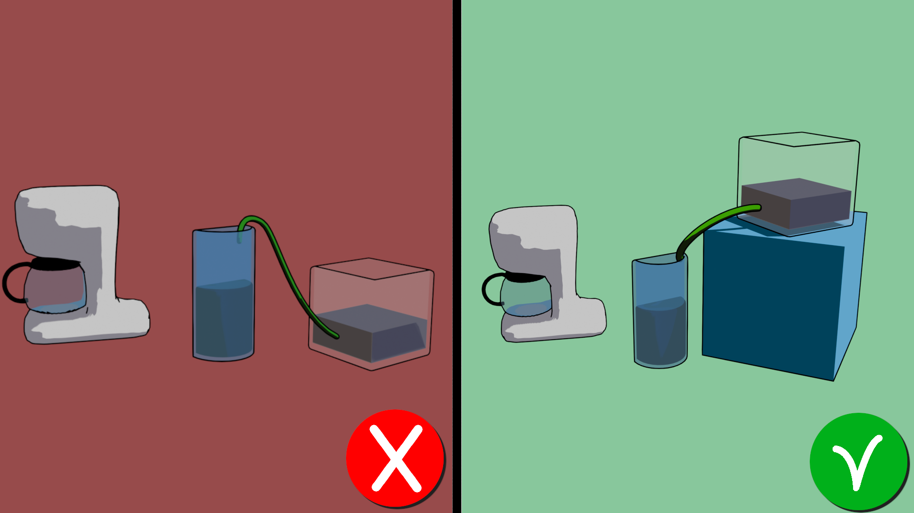
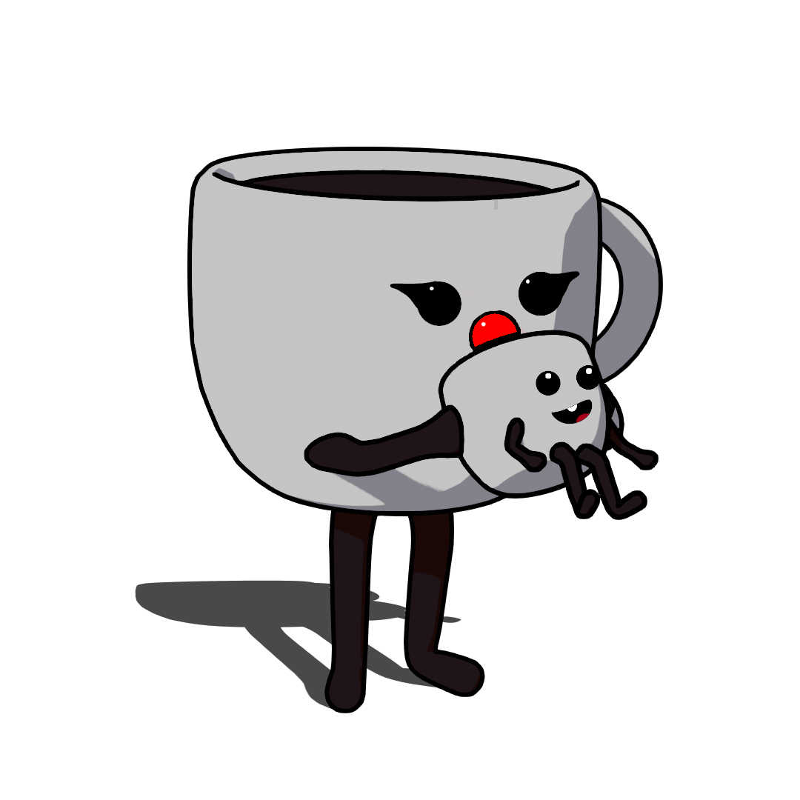

Quickstart guide
Stap 1

Open het batterijkamertje doe er 3 volle AAA-batterijen in
Stap 2

plak de watersensor op gewenste hoogte aan de binnenkant van het
waterreservoir. Als het water onder de pinnen komt wordt het apparaat
bijgevuld
Stap 3

hang de waterslang aan de binnenkant van het waterreservoir en plaats
Sarah’s meegeleverde reservoir zodat het hoger staat dan het reservoir
van het koffiezetapparaat.
Stap 4

probeer het uit met uw lekkerste bakje koffie!